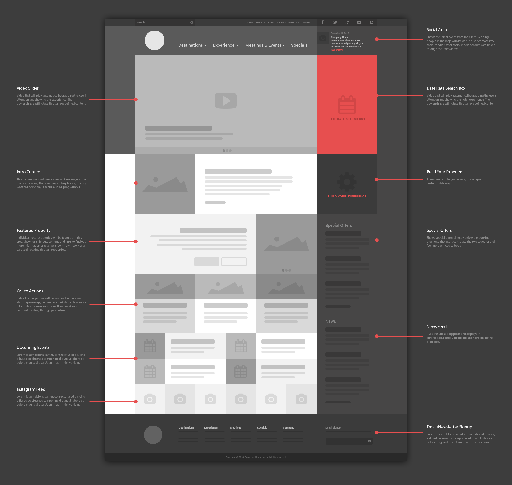

go back to the blog

Hi..
I'm Belhassen Chelbi, a frontend web developer  which means ..
which means ..
if you have an PSD/wireframe  or even drawing in a piece of sheet .. I'll convert it into a website 
if you have just an idea .. I can help you develop it , and make it as a website
If you don't know what kind of design you want for your website  , I can help you with that
then I'll convert it into a working website
, I can help you with that
then I'll convert it into a working website